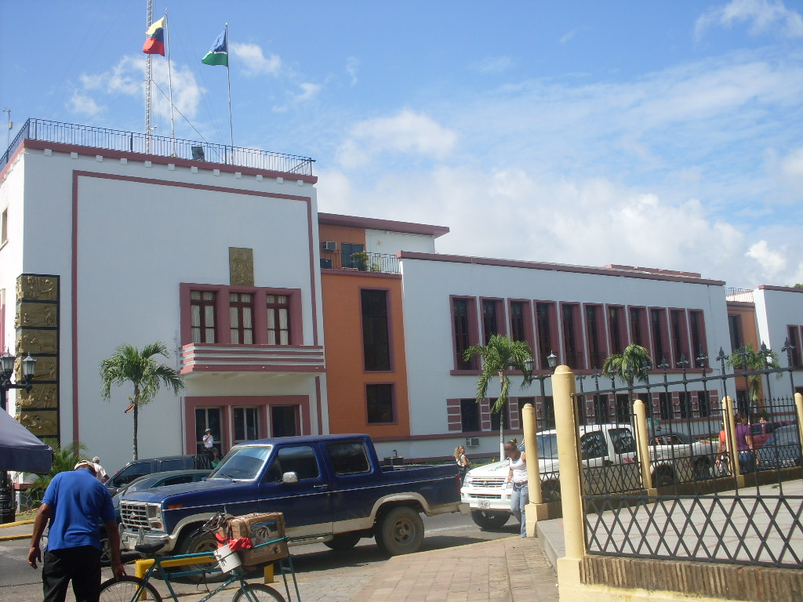
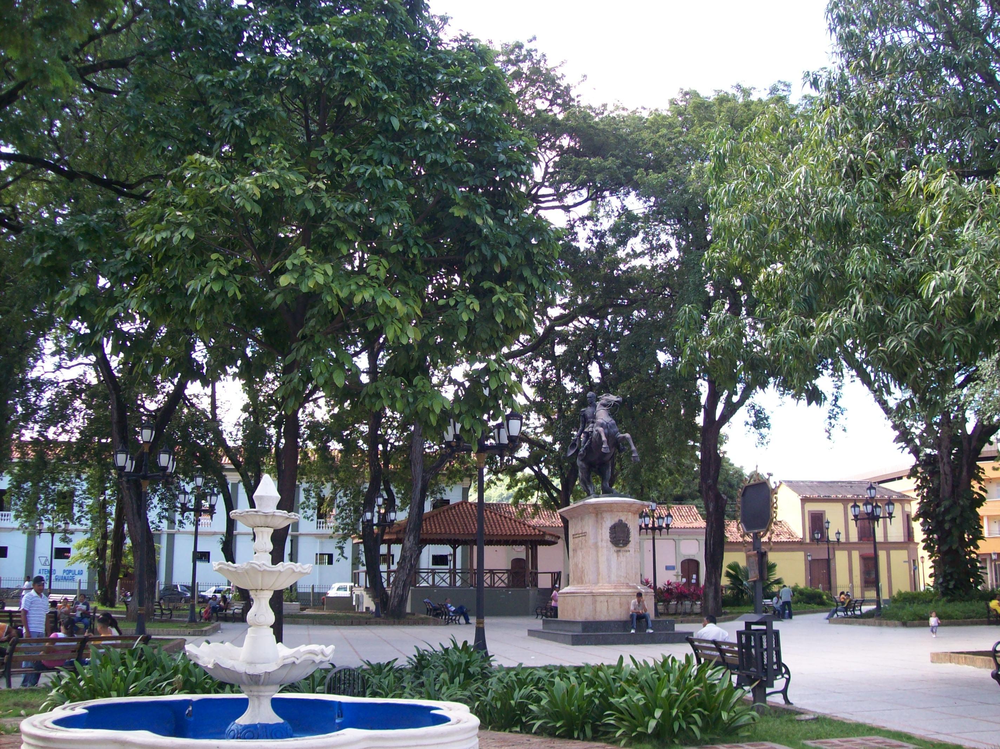

My Favorite City
My favorite city is called "Guanare".
City Location

Located at the edge of the Southwestern floodplains, near the Andes foothills, Guanare is in a region known for livestock and agricultural production. Guanare is also the location of one of the campuses of UNELLEZ.
Some other details

Guanare (Spanish pronunciation: [ɡwaˈnaɾe]) is the capital of Portuguesa State, Venezuela. It is where la Virgen de Coromoto is said to have appeared to a Coromoto Indian. Guanare was founded on 3 November 1591 by João Fernandes de Leão Pacheco (1543–1593), a Portuguese captain from Portimão.